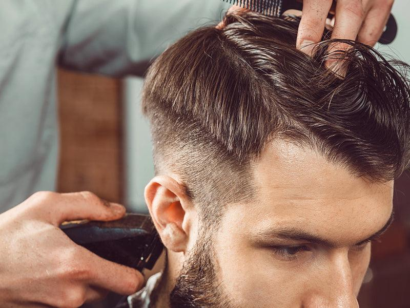
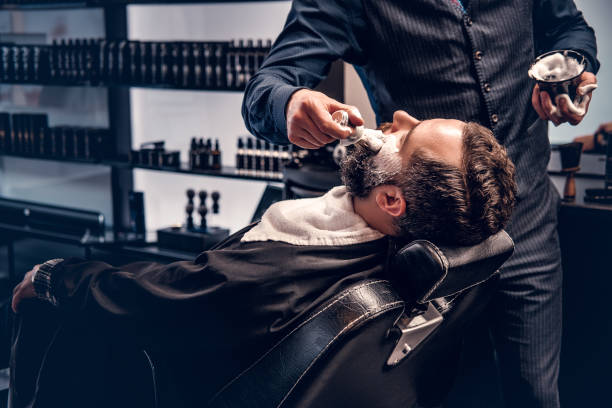

Miért érdemes a 7. kerületben férfi hajvágást keresni?
A 7. kerület – Erzsébetváros – az elmúlt években Budapest egyik legforgalmasabb belső negyedévé vált. A Dob utca, Kertész utca, Király utca és az Erzsébet körút környékén sorra nyíltak azok a helyek, ahol a minőség és a hangulat is számít. Ez igaz a barber shopokra is.
A férfi hajvágás a 7. kerületben ma már nem csak egy gyors, rutinszerű szolgáltatás. Egyre többen keresnek olyan helyet, ahol odafigyelnek rájuk, ahol a borbély valóban érti a dolgát – és ahol az eredmény következetesen jó. Nem mindegy, hogy hova ülsz le.

Milyen férfi hajvágást válassz?
A leggyakoribb kérdés, amit egy új vendég feltesz: "Mit kérjek?" A válasz mindig ugyanaz – a megfelelő férfi frizura az arcformádtól, a hajtípusodtól és az életstílusodtól függ. Nincs egyetlen helyes válasz, de van egy módszer, amellyel megtalálható.
A tapasztalt borbély az első néhány perc alatt felmér mindent, amit tudni kell: hogyan nő a hajad, milyen az arcformád, hogyan szereted viselni a hajad a hétköznapokban. Ezek alapján tud konkrét javaslatot tenni – nem csak azt vágja le, amit mutatol neki.
- Fade hajvágás – skin fade, mid fade vagy high fade, az arcformához igazítva
- Klasszikus férfi frizura – időtálló stílusok, amelyek mindig rendezettnek mutatnak
- Gépi hajvágás – precíz, gyors, és hosszabb ideig tartja a formáját
- Textured crop – lazább, természetes megjelenés, kevés hajápolóval is kezelhető
- Undercut – éles kontraszt az oldalak és a tetőrész között, karakteres összhatás

Miért érdemes barber shopot választani fodrász helyett?
Ez egy legitim kérdés – és az őszinte válasz az, hogy nem mindegy, mit kérsz. Ha klasszikus férfi hajvágást, fade technikát, szakálligazítást vagy borotválást szeretnél, a barber shop az, ahol ezekre specializálódtak. Egy általános fodrász is levágja a hajad, de a barber shop az a hely, ahol a férfi hajvágás az egyetlen fókusz.
A különbség a részletekben van: a gépes technika precizitásában, az átmenetek kidolgozottságában, abban, hogy a borbély tudja, hogyan kell fade-et vágni, hogyan kell szakállat igazítani, és hogyan kell konzultálni egy vendéggel ahelyett, hogy csak elvégzi a munkát.
- Specializált tudás – férfi hajvágásra és szakállkezelésre fókuszálva
- Precíz gépes technika – fade, taper, zero vágás profi szinten
- Konzultáció – arcforma, hajtípus, életstílus alapján személyre szabott javaslat
- Tartósabb eredmény – a vágás tovább tartja a formáját
- Szakálligazítás és borotválás is elérhető egy helyen
Bosphorus barber shop – férfi hajvágás a 7. kerületben
A Bosphorus barber shop Budapest 7. kerületében található, könnyen megközelíthető a Blaha Lujza tértől, az Erzsébet körútról és a Dob utca irányából egyaránt. A közelben van a Kertész utca, a Klauzál utca és a Király utca is – az egyik legjobban elérhető pont a belvárosban.
A Bosphorusban minden hajvágás konzultációval kezdődik. A borbély megnézi az arcformát, megkérdezi, hogyan viseled a hajad, és csak ezután javasol stílust. Ez nem lassítja le a folyamatot – éppen ellenkezőleg: pontosabb eredményt ad, és kisebb az esélye, hogy valami nem úgy sül el, ahogy vártad.
- Skin fade, mid fade, high fade – minden fade technika elérhető
- Szakálligazítás és klasszikus borotválás is
- Online időpontfoglalás – nem kell sorban állni
Foglalj időpontot a 7. kerületben
Ha igényes férfi hajvágást keresel Budapest belvárosában, a Bosphorus barber shop jó választás. Tapasztalt borbélyok, személyre szabott stílus, precíz kivitelezés – online időpontfoglalással.